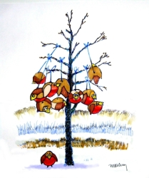
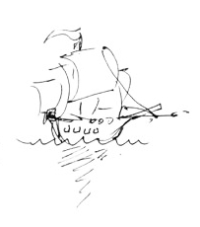

This page has usage examples for the following words:

a boil, boils できもの
a hard lump, hard lumps しこり（グリグリ）
breast cancer 乳癌 にゅうがん
family history 家族歴 かぞくれき
female hormones 女性ホルモン じょせいホルモン
gene testing 遺伝子検査 いでんしけんさ
hormone replacement therapy ホルモン代用療法
ホルモンだいようりょうほう
lymph gland リンパ腺l リンパせん
mammary gland 乳腺 にゅうせん
mammography マンモグラフィー
乳房造影法 にゅうぼうぞうえいほう
metastasis 転移 てんい
obstetrics and gynecology(OB-GYN) 産婦人科 さんふじんか
palpation 触診 しょくしん
tumor 腫瘍 しゅよう
I have a few family members who had breast cancer.
親族に乳癌になった者が数人います。
しんぞくににゅうがんになったものが すうにんいます。
I have learned that a family history is important.
家族歴が重要であると知りました。
かぞくれきが じゅうようであるとしりました。
I would like to have genetic tests for breast cancer performed.
乳癌に関係ある遺伝子の検査を希望します。
にゅうがんに かんけいある いでんしのけんさを きぼうします。
Is there anything I can do to prevent breast cancer?
乳癌にならないために個人で出来ることがありますか。
にゅうがんに ならないために こじんで できることがありますか。
I’ve heard that there is a drug that prevents breast cancer for people with a positive family history.
乳癌の家族歴があっても乳癌を防ぐ薬があるとききました。
にゅうがんのかぞくれきがあっても にゅうがんをふせぐくすりがあるとききました。
I had a mammogram about 6 months ago.
半年前ぐらいにマンモグラフィーの検査をしました。
はんとしまえぐらいに マンモグラフィーのけんさをしました。
I was told that the test was negative at that time.
その時は異常なしといわれました。
そのときは いじょうなしといわれました。
I had hormone replacement therapy for 15 years, and discontinued it 5 years ago.
ホルモン代用療法を15年続けた後、5年前にやめました。
ホルモンだいようりょうほうを 15ねんつづけたあと、5ねんまえにやめました。
A conversation between a patient and a doctor about breast cancer
Patient:
I understand that with the advancement of science, there are new methods of detection and treatment of breast cancer.
科学の進歩にともなって、乳癌の発見、治療にもいろいろ新しい方法が取り入れられていると聞きました。
Doctor:
Because of advancement in molecular biology and gene science, genes that are responsible for breast cancer have been identified, and research on cancer cells made it possible to choose drugs that are effective. Among risk factors of breast cancer, age, family history and alcohol consumption have been established. Measures against these risk factors have also been improved, such as mammography, gene testing and life style modification. While, in the past, radical mastectomy was the only option, it now is possible to have lumpectomy.
最も目覚しいのは、分子生物学ならびに遺伝子学の発展により、乳癌になりやすい遺伝子が同定された事と、乳癌の細胞自体の研究により、癌細胞の特質に合った薬剤を選択できるようになったことです。乳癌の危険因子のうち、年齢、家族歴、飲酒はすでに確立されていますが、それに対応した防御策も年々進歩しています。マンモグラフィー、遺伝子検査、生活習慣病に注意を払うなどです。治療法の面でも、過っては乳房の全摘出手術だけであったに対し、現在は腫瘍だけの摘出が可能になっています。

[ni02]
| © 1995-2013 NACOS International Institute. All Rights Reserved. |